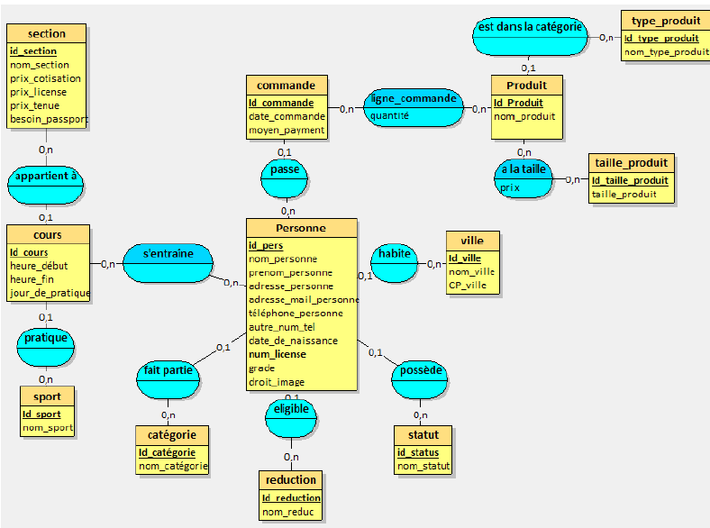
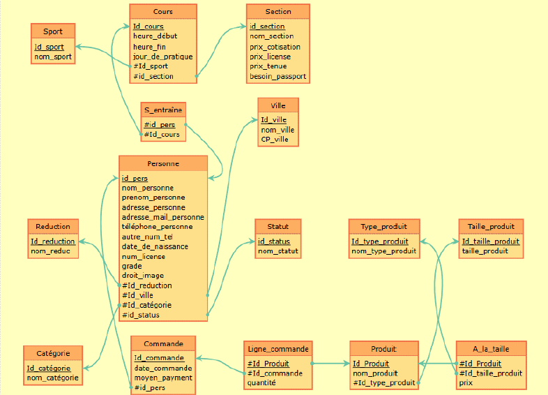

Projet Base de Données
Ce projet s'est décomposé en plusieurs étapes :
-
Contacter une entreprise ou une association pour leur demander s'ils adhère au projet et quelles sont leurs besoins afin de pouvoir créer une base de données conforme à leurs besoins. Pour ma part, le club Mennecy Arts Martiaux Corréens a bien voulu collaborer avec moi.
-
Un fois les besoins récupérés, je les ai modélisés dans un Modèle Conceptuel des Données (MCD). Ceci est utilisé pour représenter les entités et les relations entre elles et permet de structurer efficacement les informations relatives. (Exemple ci-dessous)

Cette représentation reste très abstraite et nécessite un étape intermédiaire avant la création de la base de données utilisable. -
L'étape suivante était celle de la création du Schéma Relationnel (SR). Un schéma relationnel est une représentation logique d'une base de données relationnelle. Il est composé de Tables, elle-même composé d'attributs. Ce schéma est la représentation qui se rapproche le plus de la base de données.
 -
La dernière étape effectué est la création de la base de données. Celle-ci a été effectué en SQLite